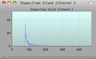

KATRIN BAM Detector


This object’s dialog contains information specific to the KATRIN BAM detector.
Interface to Run Control
Here is the map that describes which channel is connected to which segment
List of Thresholds and gains. Note that you can edit the values here.
Info about the selected segment
Total rate over time
If any hardware specific parameter changes, the configuration check will fail at the start of a run and will post an alarm
Segment rates, Thresholds, or gains
Select what to display
Read/Save the map
histogram of rates, thresholds, or gains
Load all values to hardware

Select the hardware type used

Cmd-Double-Click to open Histogram
Double-Click to open HW Dialog
Note -- you must have a Data Monitor in the Data Chain to have access to the histogram
Normally you would use IPE FLT cards instead of the Shaper cards in this example